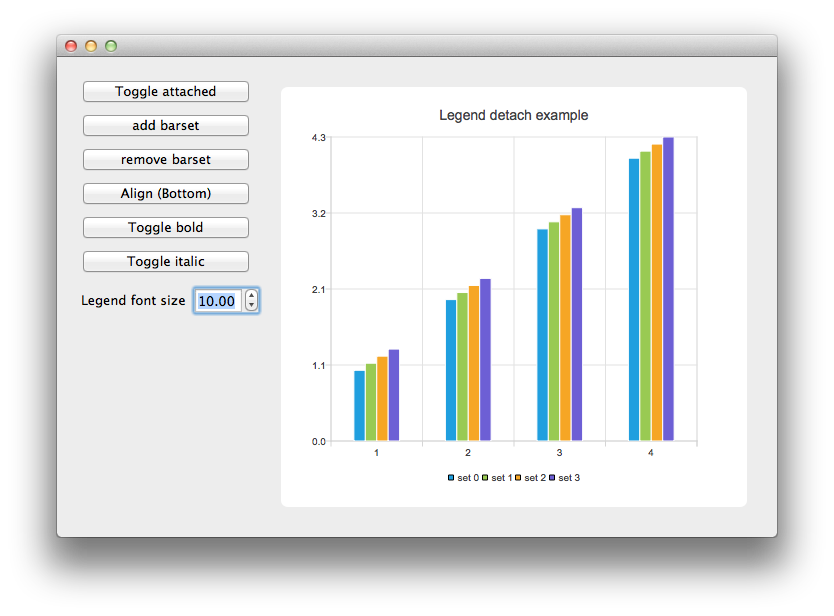
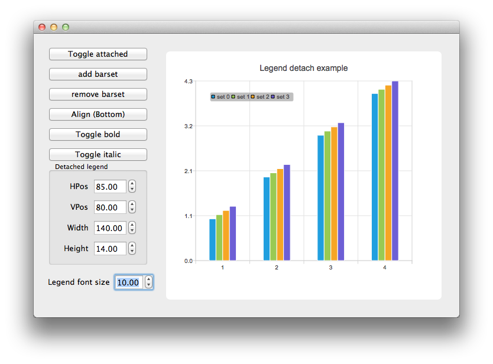

Legend Example
This example shows how to detach the legend from the chart and how to attach it back.
By default the chart draws the legend inside the same view with the chart. In some cases the user may want to draw the legend to somewhere else. To make this possible the legend can be detached from the chart. Detaching means that the chart doesn't draw the legend or try to change its layout. Detached legend can then be drawn wherever the user wishes, for example, in a different graphics scene. The behavior of the legend can be inspected by running the legend example. In the example we use the bar series where we add or remove the bar sets. The legend reflects the changes in series. The legend can be detached or attached back to the chart and its alignment can be modified. When the legend is detached, it can be resized and positioned freely.


Running the Example
To run the example from Qt Creator, open the Welcome mode and select the example from Examples. For more information, visit Building and Running an Example.
Detaching and Attaching Legends
Here we turn the legend visible and set its alignment to the bottom of the chart.
m_chart->legend()->setVisible(true);
m_chart->legend()->setAlignment(Qt::AlignBottom);
This snippet shows how to detach the legend from the chart. After detaching, we turn its background to visible and set a different color to it. This makes it easier to see how the items inside the legend are arranged in detached mode.
legend->detachFromChart(); m_chart->legend()->setBackgroundVisible(true); m_chart->legend()->setBrush(QBrush(QColor(128, 128, 128, 128))); m_chart->legend()->setPen(QPen(QColor(192, 192, 192, 192)));
Here we attach the legend back to the chart. The background is turned invisible.
legend->attachToChart(); legend->setBackgroundVisible(false);
This shows how we set the detached legend dimensions. After setting the new values, we call update to show changes on screen.
m_chart->legend()->setGeometry(QRectF(m_legendPosX->value(),
m_legendPosY->value(),
m_legendWidth->value(),
m_legendHeight->value()));
m_chart->legend()->update();